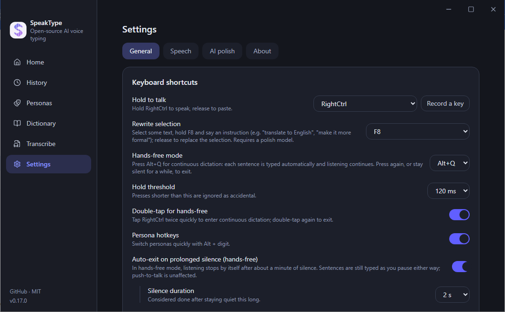

Fully open source
MIT licensed. Protocols, correction algorithms, UI — every line is readable, hackable and self-hostable.
Hold RightCtrl, talk, release — your words land at the cursor in any app. Recognition runs on your machine by default; engines, AI polishing and the hotword dictionary are all yours to configure.
Windows 10/11 x64 · macOS preview (Apple Silicon) · release notes & older builds
Most AI dictation apps are closed source and route your voice through the vendor's servers. SpeakType has none — audio goes only where you tell it to go, or nowhere at all.
MIT licensed. Protocols, correction algorithms, UI — every line is readable, hackable and self-hostable.
Recognition happens on your machine by default. Audio leaves it only if you configure a cloud engine — and then only to that endpoint.
Fix a wrong word by hand after it lands and SpeakType learns {wrong → right} into your dictionary. Same mistake, never twice.
Tap Alt+Q or double-tap the hold key. Sentences split on silence, longer pauses start a paragraph, Esc cancels anytime. Optional voice commands.
Select text, hold F8 and say “translate to English” or “make it formal” — the selection is replaced in place. Switch windows meanwhile and the result waits in your clipboard.
Alt+1…9 switches styles — default, auto-translate, report-to-boss, CLI, your own prompt — or let them switch automatically by foreground app.
No microphone on the desktop? Scan a QR code and talk into your phone — LAN direct, or through a relay you can self-host.
Drop audio or video (mp3, wav, m4a, mp4… up to 3 h). Offline segmented transcript with timestamps; export TXT, SRT or VTT.
Run the installer, or unzip the portable build — it keeps its config next to the .exe.
Settings → Speech → built-in offline model (one-click download), or paste your own API key.
Put the cursor anywhere, hold RightCtrl (or a mouse side button), speak, release.
Fix a word by hand and it goes into your dictionary automatically — accuracy compounds.
Download a model once inside the app and stay offline forever — or point SpeakType at any OpenAI-compatible endpoint. Switch anytime.
| Model | Size | Best for | Notes |
|---|---|---|---|
| SenseVoice Smalldefault | 234 MB | Chinese, Cantonese, Japanese, Korean, English | ~0.27 s per utterance in our tests, punctuation built in |
| Parakeet TDT 0.6B v3int8 | 660 MB | English + 25 European languages | Highest English accuracy; int8 occasionally clips the first word of a sentence |
| Parakeet full precisionfp32 · optional | 2.5 GB | Same languages as Parakeet | Fixes the clipped first word; ~2.7 GB RAM while loaded, same speed as int8 in our measurements |
| Whisper tiny / base / smallwhisper.cpp · Windows only | 32 / 60 / 190 MB | Broadest language coverage | tiny is fastest but error-prone; small is slowest and most accurate |
Swipe sideways to see the whole table
/audio/transcriptionsFollows your OS theme in real time. Everything below is a real screenshot of the Windows build.



Scan the QR code in Settings, hold the button on your phone and talk. The text lands on the computer, at the cursor, exactly like a local recording.
Against the closed-source dictation tools people usually reach for.
| SpeakType | Typical AI dictation app | OS built-in dictation | |
|---|---|---|---|
| Source code | Open (MIT) | Closed | Closed |
| Works fully offline | Yes — 4 local models | Usually cloud-only | Partly |
| Where your audio goes | Nowhere, or the endpoint you choose | Vendor servers | Vendor servers |
| Bring your own engine / key | Yes | No | No |
| Learns corrections from your edits | Automatic | Manual dictionary | No |
| Hands-free & rewrite selection | Yes | Varies | Limited |
| Phone as microphone | Yes | No | No |
| Price | Free | Subscription | Free |
Swipe sideways to see the whole table
Windows v0.17.2 is the stable release. The macOS build is an early preview — please read the notes before installing.
scoop bucket add speaktype https://github.com/wookat/scoop-speaktype
scoop install speaktypeUnsigned installer — if SmartScreen objects, choose “More info → Run anyway”.
Not notarized: allow it under Privacy & Security or run xattr -d com.apple.quarantine /Applications/SpeakType.app. Hold Right Option to talk. Local engines: SenseVoice and Parakeet.
Not a standalone dictation app: it streams your voice to SpeakType on the desktop over LAN or the relay.
Not unless you choose a cloud engine. With the built-in offline models, recognition, punctuation and the “learn from my edits” comparison all run on your machine. SpeakType operates no servers and collects nothing; API keys and history live in %APPDATA%\SpeakType (Windows) or ~/Library/Application Support/SpeakType (macOS).
SenseVoice covers Chinese, Cantonese, Japanese, Korean and English; Parakeet covers English plus 25 European languages; Whisper (Windows) covers the broadest set. Cloud engines follow their own language lists. The UI itself is available in English, Simplified and Traditional Chinese, Japanese and Korean.
Code-signing certificates cost money the project does not have yet. The installer is built from the public source; SmartScreen shows “More info → Run anyway”. On macOS the app is ad-hoc signed and not notarized — see the install guide for the one-line xattr workaround.
It is a preview. Building, installing, granting permissions and hold-to-talk dictation were verified on an Apple Silicon machine; the Intel build is cross-compiled and has not been run on Intel hardware. Whisper.cpp and automatic learning from edits are Windows-only for now.
They reuse a session you sign into yourself inside the app and talk to undocumented endpoints. They are off by default, may break at any time and may not comply with those services' terms — the account risk is yours to judge. Prefer the offline engine or your own API key if unsure. See DISCLAIMER.md.
Yes. After the one-time model download (resumable, SHA-256 verified, three mirrors), everything runs offline. The portable build keeps its data next to the executable.
Open an issue on GitHub. Failed recordings are kept locally (max 20 clips / 7 days) so you can retry from History without re-speaking, and the main log lives in the data folder.
Free, open source, offline by default. Install in a minute and keep your voice to yourself.
v0.17.2 · MIT · Source on GitHub